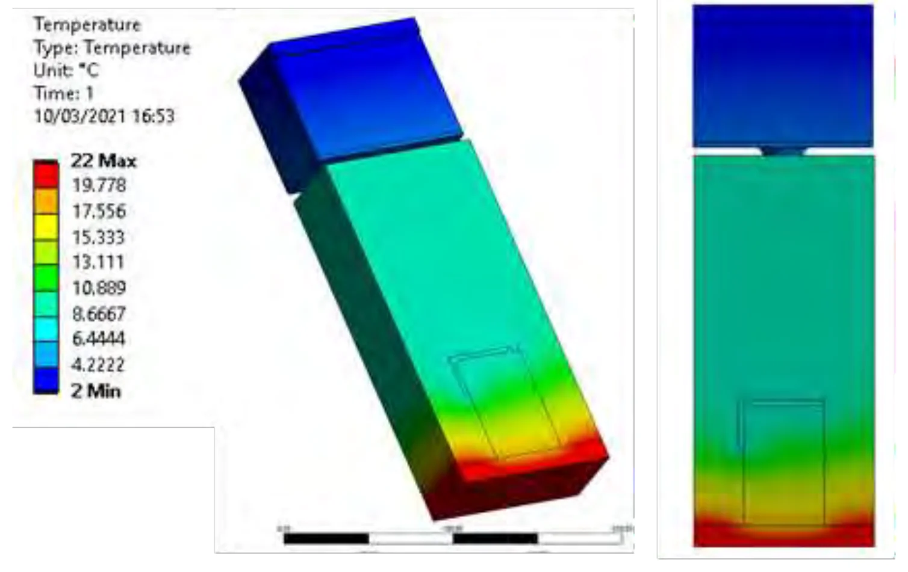
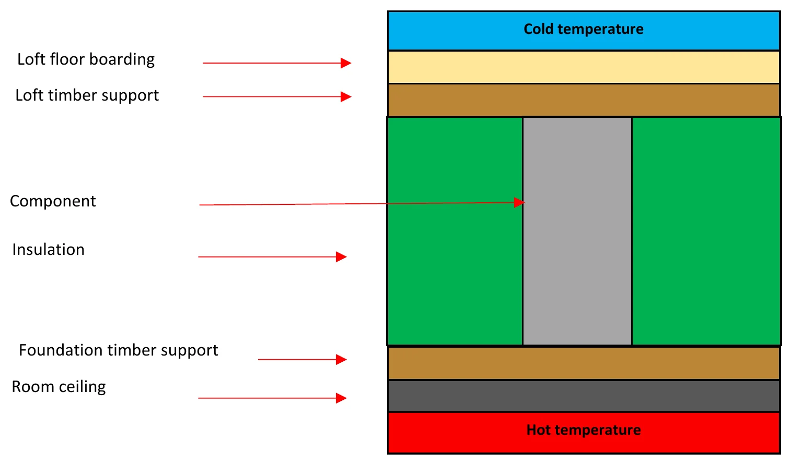
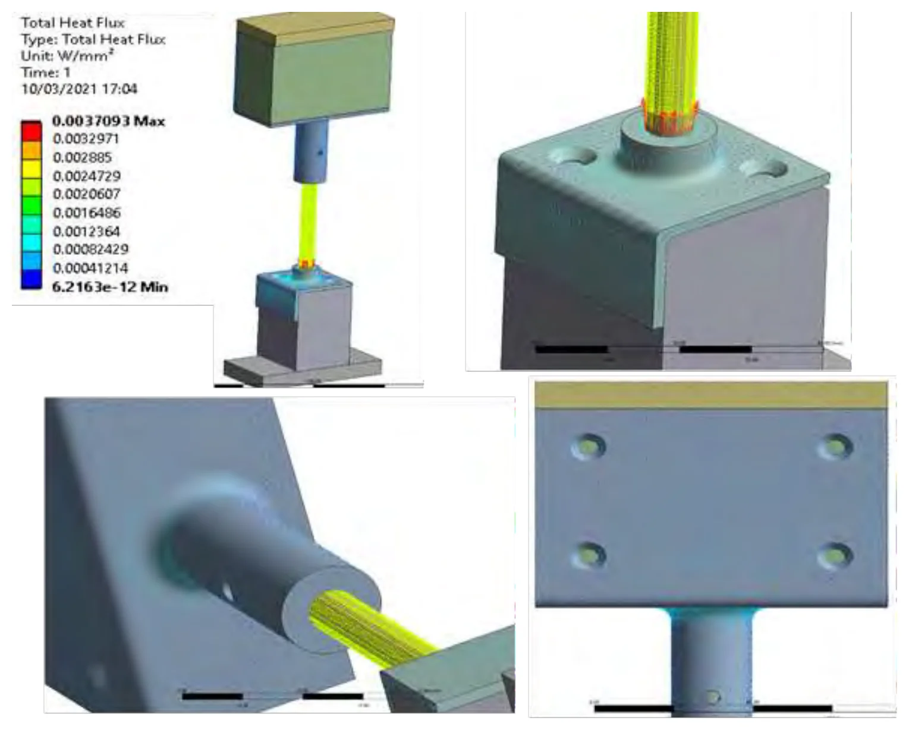
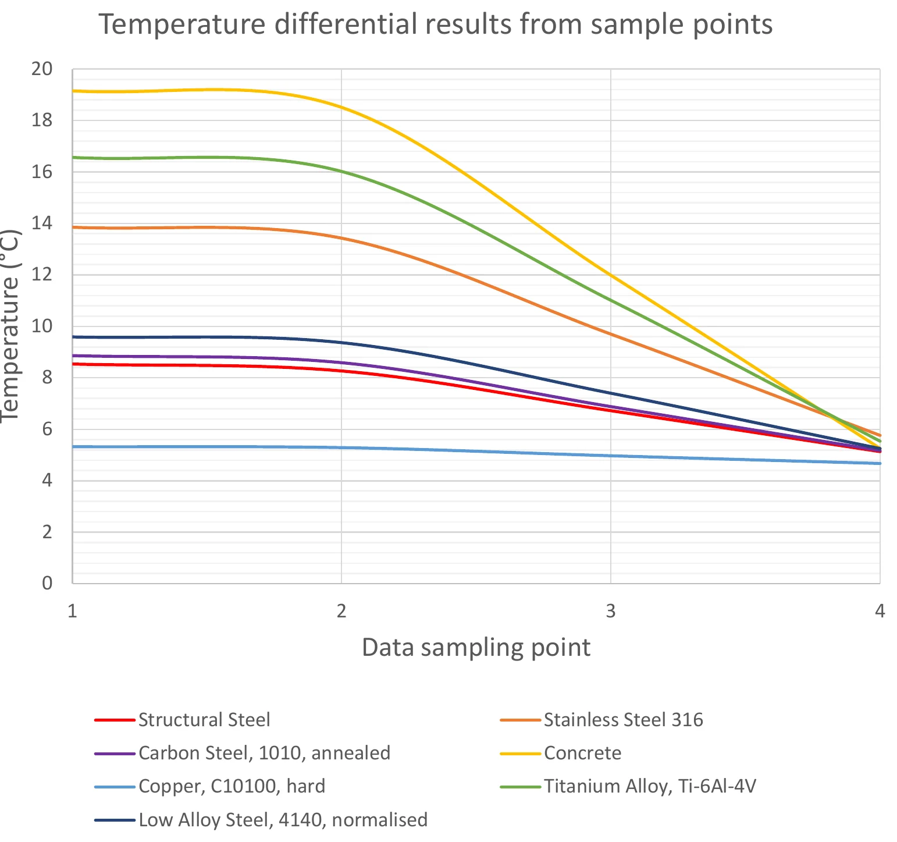

MEng Industry Project · Lancaster University with Cumbria Loft Boarding · 2021 · Group of five
LOFT-E Loft Leg Thermal Analysis
Simulating how much heat a steel loft-boarding leg lets through the insulation, and what it would take to meet building regulations.

- 0.16W/m²K: the U-value a loft ceiling has to meet. A steel leg pushed its local section to 0.25
- ≤ 0.92W/m·K: the thermal conductivity a leg material would need to meet it
- 14Mesh refinement steps, taking average element quality from 0.59 to 0.86
- 252.6 kgLoad on a single structural-steel leg before yield, from the group's stress analysis
The brief
LOFT-E is an adjustable steel leg that holds loft boarding above the insulation. Cumbria Loft Boarding, part of UK Loft Boarding Ltd, asked our group to find the leg's strength and thermal limits and suggest improvements, as physical testing had been postponed by COVID-19. Group of five, ENGR 445 Leadership in Technology, Lancaster University, March 2021.
The company now publishes our report on its LOFT-E product page.
My part: the thermal analysis. The group split into a mechanical team and a thermal team.
Setting up the thermal model
The leg is never used alone, so we modelled one block of the loft: room ceiling, foundation timber, the leg, insulation, loft timber and boarding. That kept the model small enough to mesh finely in ANSYS.

- Boundary conditions: 22 °C at the ceiling, 2 °C at the loft floor, and a 5 W heat flow on the ceiling face.
- Materials: steel leg (60.5 W/m·K), oak timber, plasterboard and insulation (0.044 W/m·K). The company never sent its material data, so the leg was modelled in a generic structural steel.
- Mesh: the default mesh was poor (average element quality 0.59). Over 14 refinement steps, using element sizing on the rod, saddles and timber and hex-dominant meshing, quality rose to 0.86, with skewness down from 0.51 to 0.21.
What the simulation showed

- The steel rod is the main path for heat from the room into the loft, with the steepest temperature drop, about 14 °C, between the ceiling and the bottom saddle.
- The temperature pattern stayed the same across a range of temperature differences, so the geometry, not the conditions, sets where heat is lost.
U-values and material choice
A loft ceiling in an existing home needs a U-value of 0.16 W/m²K or less. For one leg in a 0.6 × 1.2 m section of loft, the insulation alone gives 0.148. Adding the steel leg raises it to 0.25. The same model was then run across a range of materials and thermal conductivities:
| Leg material | Thermal conductivity (W/m·K) | U-value of the section (W/m²K) |
|---|---|---|
| Structural steel | 60.5 | 0.255 |
| Stainless steel 316 | 14.58 | 0.224 |
| Titanium alloy Ti-6Al-4V | 7.19 | 0.203 |
| Concrete | 2.93 | 0.179 |
| HDPE | 0.48 | 0.154 |

A curve fitted through the results (R² 0.9999) shows the leg material needs a thermal conductivity of 0.92 W/m·K or less to meet 0.16. No metal does. Of the steels, stainless steel 316 kept the most heat in the room; a plastic leg would meet the target but would need its strength checked.
The mechanical side (group)
- A single structural-steel leg could carry 2,477.7 N (252.6 kg) before yield, or 126.3 kg with a factor of safety of 2.
- Off-centre bending was the weak point: the structural-steel leg's factor of safety fell below 1 after about 430 N, so the group recommended physical bending tests.
- Low alloy steel 4140 roughly doubled that, to about 870 N, so it was suggested where uneven loading is likely.
What I'd do differently
- The marker pointed out that a full U-value comparison should also ask whether fewer legs would do, since the leg is conservatively sized for load.
- Report the direction of thermal stress, not just equivalent stress: cooling at the top puts the rod in tension, which partly offsets the compressive load.
- Get the real material data from the company before modelling, and back the simulations with physical tests.
Tools: ANSYS Workbench (steady-state thermal and static structural), SolidWorks, Excel
← All projects